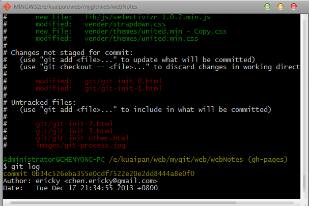
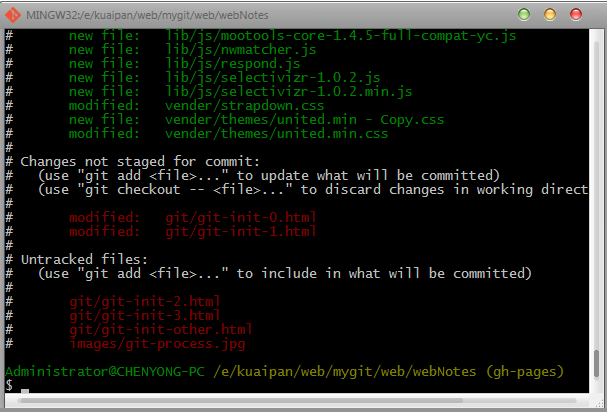

####Git 笔记-4
摘自:http://blog.csdn.net/jackystudio/article/details/12249451
#####Git的仓库的操作:
1.查看操作日志:
#用于查看操作日记详情。因为Git是分布式的，采用SHA1这样的版本号可有效的防止版本冲突。
#底下那串长长的数据就是SHA1 ID，表示当前版本号
$ git log
#单行显示，只显示版本号和备注 便于浏览
$ git log --pretty=oneline
cba8800f2daaf4075a506b6d763798ea15ba11cc modify JackyData01
aea0365712908805bc28540b4db9fd2f15360a8b init AddFiles

2.查看git库状态:
#查看版本库状态，可以看到红色的JackyData01被修改过
$ git status

3.绕过暂存区直接提交:
#直接提交修改
$ git commit -a -m "modify JackyData01"
[master cba8800] modify JackyData01
1 file changed, 1 insertion(+), 2 deletions(-)
4.查看差异
#修改JackyData02的内容为HelloGit
$ echo "HelloGit" > JackyData02
#使用Git diff查看差异，可以看到HelloJacky被删除了，而HelloGit被添加了
$ git diff
diff --git a/JackyData02 b/JackyData02
index 85d5336..1da19b8 100644
--- a/JackyData02
+++ b/JackyData02
@@ -1 +1 @@
-HellloJacky
+HelloGit
5.提交修改并打开Git GUI界面
#提交修改 && 短路运算符
$ git add . && git commit -m "modify JackyData02"
[master a5f6601] modify JackyData02
1 file changed, 1 insertion(+), 1 deletion(-)
#打开GUI界面
$ gitk --all